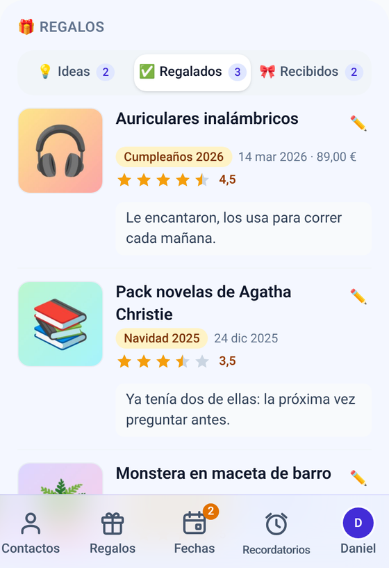
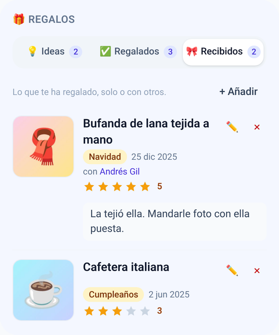
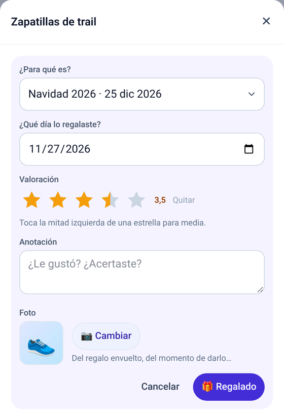
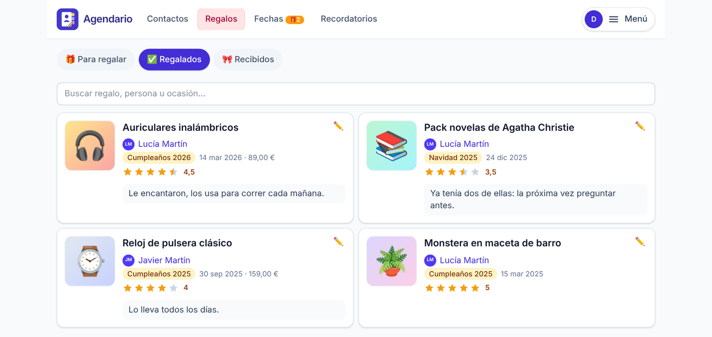

15Novedades de la versión 1.5.0
La 1.5.0 renueva los regalos: ahora puedes guardar cómo fue cada regalo, con estrellas, una anotación y una foto, y verlo todo en la ficha de cada persona.
Recuadro «Regalos» con tres pestañas
En la ficha de cada contacto, el recuadro 🎁 Regalos tiene tres pestañas (con el número de cada una):
- 💡 Ideas: lo pendiente y lo comprado, como hasta ahora. Cada idea mantiene su botón de estado (⏳ Pendiente · 🛒 Comprado · 🎁 Regalado).
- ✅ Regalados: lo que ya le has regalado, en grande: foto, ocasión, fecha, precio, valoración y anotación. Con el lápiz ✏️ cambias el día, las estrellas, la anotación o la foto.
- 🎀 Recibidos: lo que te ha regalado (solo o con otros), con foto, fecha, motivo, valoración y notas. Sustituye al recuadro «Regalos recibidos» que había antes en la ficha.

Pestaña Regalados en la app.

Pestaña Recibidos: también con foto y estrellas.
Como siempre, los regalos son personales: aunque compartas el contacto, tus ideas, lo que regalas y lo que recibes solo lo ves tú.
Al marcar un regalo como regalado

El diálogo de «🎁 Regalado».
Al tocar el estado de una idea y elegir 🎁 Regalado, además del evento y del día puedes añadir:
- Valoración de 0 a 5 estrellas, con medias (2,5 · 3,5…). Toca la mitad izquierda de una estrella para poner media; vuelve a tocar la misma para quitarla, o usa «Quitar».
- Anotación: ¿le gustó?, ¿acertaste?, ¿qué cambiarías la próxima vez?
- Foto: del regalo envuelto, del momento de darlo… Si la idea ya tenía imagen, se conserva salvo que elijas otra.
Si devuelves un regalo a ⏳ Pendiente, se borran su valoración y su anotación.
Imagen al crear una idea o un regalo recibido
En el formulario de nueva idea (en la ficha, en la pestaña Regalos y al compartir desde el móvil) y en el de regalo recibido hay un botón 📷 Añadir imagen. Si pones un enlace y no eliges imagen, Agendario sigue intentando sacarla de la web.
Pestaña «Regalados» y selectores fijos
- En Regalos hay una pestaña nueva, ✅ Regalados, con todo lo que has regalado a cualquiera, de lo más reciente a lo más antiguo y con buscador (por regalo, persona u ocasión).
- En Regalos (Para regalar · Regalados · Recibidos) y en Fechas (🎉 Eventos · 📜 Efemérides), los botones se quedan fijos arriba al desplazarte. En el móvil, Eventos y Efemérides ya llevan su emoji.

Regalos → Regalados en el ordenador.
Cómo actualizar. Instala el zip con bash /opt/actualizar-agendario.sh. En la web se ve al recargar; en el móvil hace falta la APK 1.5.0 (la anterior sigue funcionando con este servidor, pero sin las pestañas nuevas). En «Acerca de», un agradecimiento a Emilcar.fm y a Danaus, de donde salió la idea de la gestión de regalos.